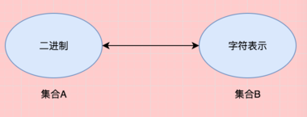
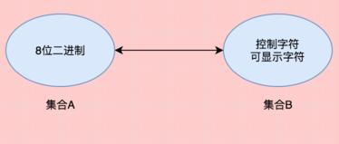
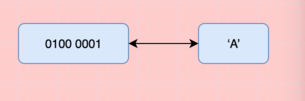
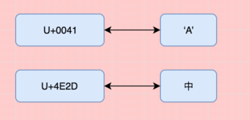
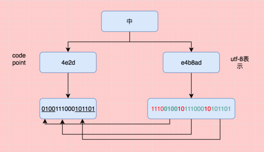
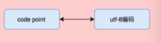
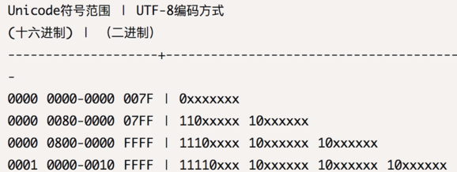

谈谈字符编码
这里总结一下我对 Unicode，UTF-8 和 ASCII 的认识。其中不乏参考了很多别人的思路，但目的只有一个，让我们更加清晰的认识它们是个什么东西。
史前世界
身处在现在，我们很难理解 ASCII 出现之前是什么状况。现在我们有必要了解为什么有了 ASCII 编码。 ASCII 是一个通信标准，更是一种字符显示的标准，因为在这之前任何不同品牌的电脑之间都无法正常的交流。
在 ASCII 出现前的上世纪 60 年代，是这样一种状况：
- 不同品牌的电脑无法交流
- 每个生产商都有自己的一套表示字母、数字以及其他字符的标准
- 当时有 60 套左右的标准显示这些字符
- 仅仅 IBM 本身，不同的设备就有 9 种之多的字符集
在 1961 年，在 IBM 工作的 Bob Bemer 认识到了这种问题的严重性，所以在当年他向美国标准委员会提交了一个 ASCII 的提案。经过两年多的讨论，直到 1963 才正式通过。
因为当时和很多其他的设备都不支持，加之 IBM 对其没有很多的重视导致其被冷落了 18 年，直到 1981 年 IBM 的个人计算机的诞生。
ASCII
有了上面的介绍，我想我们已经能够了解，为什么需要它了。因为在计算机内部， 只能通过二进制而表示任何东西，所以我们需要规定一种字符表示的标准，即一个字符和二进制的映射关系，而这种映射是一种单射。

其实任何的编码都是这样一种映射，只是 A 集合和 B 集合大小问题。
在 ASCII 出现时，它只使用了一个字节的低七位二进制数来表示了 128 个字符。这些字符基本满足了现代英语的需求。

例如，字符 A 的表示：

到了这里我们就可以使用英语表示任何东西了，是不是已经很完美了。但是我们如何表示汉语或者其他的语言呢？仅仅 128 个字符是绝对不够用的。到了这里，我们就需要扩充集合 A 了。 这一部分其实不难理解，下面的介绍才是重点。
Unicode
现在我们扩从了集合 A 的范围，能够解释更多的字符了。
例如，我们现在可以用两个字节来表示一个汉字，

如果全世界都统一使用这种编码是完全可以的，但是有个很大的问题。统一使用这种编码太浪费空间了，原本 ASCII 字符，只需要一个字节就可以表示，而现在需要几个字节。例如上面的字母 'A' 现在需要 2 个字节来表示，本来可以使用 1 个字节就可以。还有一点是对于上面的“中”，我们如果按照 ASCII 来解释的话，解决就完全不同了。对于二进制来说，我们无法判断某一个字节是一个 ASCII 字符还是 Unicode 的一部分。
总的来说，Unicode 规定了一个字符的映射关系（字符集），但却没有很好的定义它如何被表示，即如何被计算机去识别。
在介绍 UTF-8 之前有必要说几个概念。
编码字符集
这个是用来表示一个字符在字库中的位置。例如上面的 U+4E2D 这叫做 code point，它表示了这个汉子"中"在字库中的位置。 上面的映射图只是一种抽象的表示，而这里说明了如何找到这种映射，即这里的 code point。
字符编码
这里的字符编码其实就是为了解决上面提到的 Unicode 的问题。我们把 code point 再次的进行编码，就出现了各种的其他编码。 其中 UTF-8 便是一种，它其实是一种变长编码。
另外，关于 Unicode 这里有个视频 A Brief History of Unicode。
如果还不明白，先继续往下看。
UTF-8
在进行之前，我们先看个例子，还是以上面的汉字 “中” 为例。

上面解释了 Unicode 中 code point 表示到 UTF-8 表示了转化。

你可以自己去实验一下，例如在 python 下：
u"中" ⇒ u'\u4e2d' "{0:b}".format(int('4e2d', 16)) ⇒ '100111000101101' u"中".encode('utf-8') ⇒ '\xe4\xb8\xad' "{0:b}".format(int('e4b8ad', 16)) ⇒ '111001001011100010101101'
下面是编码规则：

其中的 XXX 用 Code Point 的二进制位填充。例如，‘100111000101101’ 填充到 ‘1110XXXX 10XXXXXX 10XXXXXX’ 中 就是这个 '111001001011100010101101'（UTF-8 表示） 了
对比这个规则再看看上面的例子，我应该明白“UTF-8 是 Unicode 的实现方式之一”这句话的含义了。
常见的问题
乱码
为什么会乱码呢？如果你理解了 ASCII 为什么出现，应该明白是编码的问题。如果一个 Unicode 使用了 UTF-8 去编码，而你却用 UTF-16 去解码，肯定是有问题的。
u"中".encode('utf-8') ⇒ '\xe4\xb8\xad' '\xe4\xb8\xad'.decode() ⇒ UnicodeDecodeError: 'ascii' codec can't decode byte 0xe4 in position 0 '\xe4\xb8\xad'.decode('utf-8') ⇒ u'\u4e2d'
Python 2
在 Python 2 中，你如果执行
"你好".encode("utf8") ⇒ UnicodeDecodeError: 'ascii' codec can't decode byte 0xe4 in position 0: ordinal not in range(128)
这是为什么呢？ 这里我们首先要看看 "你好" 是什么类型的，事实它是 str 类型。所以它等价于：
"你好".decode().encode('utf-8')
首先将 "你好" decode 成 Unicode，然后在按照 UTF-8 编码。因为"你好" 不是有效的 ASCII，所以错误出现在 decode 这步。我们只需要改成：
u"你好".encode("utf8")
Reference
- http://ascii-world.wikidot.com/history
- https://en.wikipedia.org/wiki/Unicode
- http://www.ruanyifeng.com/blog/2007/10/ascii_unicode_and_utf-8.html
- http://cenalulu.github.io/linux/character-encoding/
- https://zh.wikipedia.org/wiki/Unicode 字符列表
- https://stackoverflow.com/questions/1273693/why-is-u-used-to-designate-a-unicode-code-point
- https://stackoverflow.com/questions/9644099/python-ascii-codec-cant-decode-byte
- https://zh.wikipedia.org/wiki/ASCII
- https://www.draw.io/